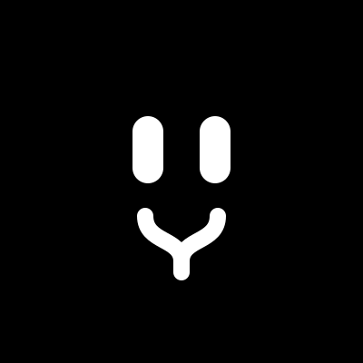

built by @forkthis_aiDraw a rough app screen with your finger, Apple Pencil or mouse. Each stroke snaps into a real UI part (screen, button, title, image, text), and one tap gives you HTML/CSS you can paste anywhere. Works in iPad Safari. Free and open source.
Big rectangle becomes a screen, pill a button, scribble near the top a title, crossed box an image, wavy line text. No AI needed.
Pointer Events with palm rejection once the Pencil touches the glass. Finger or mouse works too.
Select, drag, resize, double-tap to edit text, Layers list, eraser, undo and redo.
HTML/CSS written straight from your sketch, with Copy and Download. No key needed.
Send the sketch to a model (publik, or your own Claude or OpenAI key) and get a polished page in a live preview.
iPad Safari, phones and laptops, light and dark. Autosaves in your browser, JSON export and import.
git clone https://github.com/VedSoni-dev/scrawl cd scrawl && npm install && npm run build && npm run start
It opens with Sign in with publik. AI runs on publik or your own key.